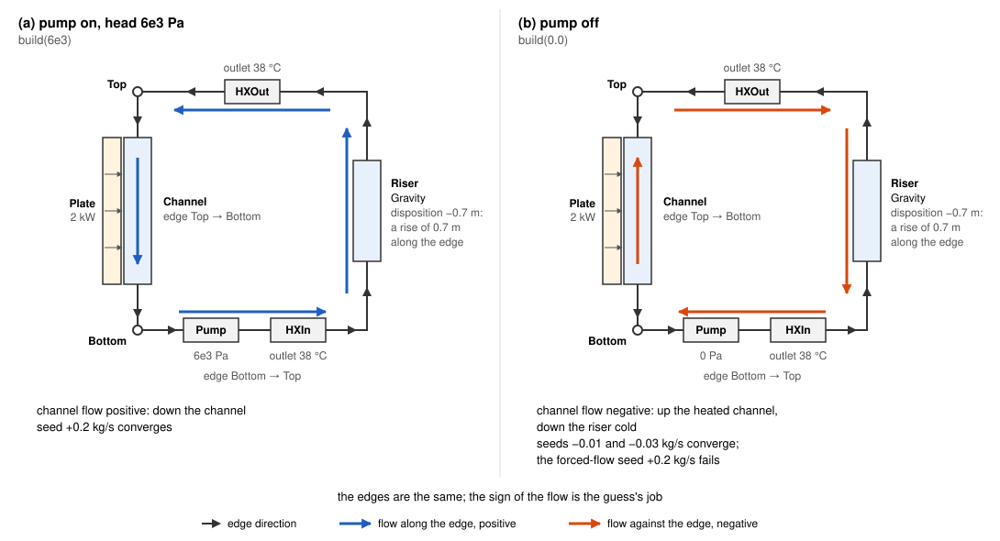

Get a steady solve to converge¶
Build a plate, an assembly or a rod solves a plate and its channel at a flow it is given; Wire a flow network guesses a loop’s pressures from its flows. This page puts the pair on a loop with a pump and a riser, seeds the solve from both helpers and then from one call, solves it, then stops the pump, where the guess must get the sign of the flow right. Steady states and guesses explains the background.
[1]:
import warnings
from functools import partial
import numpy as np
from stream import State
from stream.calculations import (
ChannelAndContacts,
Fuel,
Gravity,
HeatExchanger,
Junction,
KirchhoffWDerivatives,
Pump,
Solid,
)
from stream.composition import (
FlowGraph,
flow_edge,
guess_steady_state,
symmetric_plate,
symmetric_plate_steady_state,
uniform_x_power_shape,
x_boundaries,
)
from stream.jacobians import ALG_jacobian
from stream.physical_models.heat_transfer_coefficient import spl_htc, wall_heat_transfer_coeff
from stream.physical_models.pressure_drop import friction_factor, pressure_diff, rectangular_laminar_correction
from stream.pipe_geometry import EffectivePipe
from stream.scales import scale_vector
from stream.solvers import AlgRuntimeError
from stream.substances import light_water
The loop¶
The plate and its channel are those of Build a plate, an assembly or a rod, with 2 kW in the plate.
[2]:
length, width = 0.7, 0.070
clad_N, fuel_N, clad_w, meat_w = 2, 8, 0.0005, 0.0006
z = np.linspace(0.0, length, 11)
meat = np.zeros((len(z) - 1, fuel_N + 2 * clad_N), dtype=bool)
meat[:, clad_N:-clad_N] = True
fuel = Fuel(
z_boundaries=z,
x_boundaries=x_boundaries(clad_N, fuel_N, clad_w, meat_w),
material=Solid.from_array(np.where(meat, Solid(3500, 750, 40), Solid(2700, 900, 167))),
y_length=width,
power_shape=uniform_x_power_shape(len(z) - 1, fuel_N, clad_N, clad_w, meat_w, length),
meat_indices=meat,
name="Plate",
)
pipe = EffectivePipe.rectangular(length=length, edge1=width, edge2=0.0022, heated_edge=width)
aspect_ratio, re_bounds = pipe.depth / pipe.width, (2000.0, 5000.0)
h_spl = spl_htc("regime_dependent", re_bounds=re_bounds, Lh=length, aspect_ratio=aspect_ratio)
f = friction_factor("regime_dependent", re_bounds=re_bounds, k_R=rectangular_laminar_correction(aspect_ratio))
channel = ChannelAndContacts(
z_boundaries=z,
fluid=light_water,
pipe=pipe,
h_wall_func=partial(wall_heat_transfer_coeff, h_spl=h_spl),
pressure_func=partial(pressure_diff, f=f),
name="Channel",
)
power, p_top, T_hx = 2e3, 1.8e5, 38.0
build(head) wires the loop for a pump head; the riser is a Gravity whose negative disposition is a rise of 0.7 m along its edge. It sits between two heat exchangers, so its water is at 38 °C whichever way the loop runs; with one, reversed flow would reach it hot and the loop would have no natural-circulation solution.

The edges are fixed by build(); with the pump off the flow runs against them, so the seed’s flow is negative.
[3]:
def build(head):
top, bottom = Junction(name="Top"), Junction(name="Bottom")
pump = Pump(pressure=head, name="Pump")
riser = Gravity(light_water, disposition=-length, name="Riser")
hx_in, hx_out = HeatExchanger(outlet=T_hx, name="HXIn"), HeatExchanger(outlet=T_hx, name="HXOut")
fg = FlowGraph(
flow_edge((top, bottom), channel),
flow_edge((bottom, top), pump, hx_in, riser, hx_out),
reference_node=(top, p_top),
abs_pressure_comps=[channel],
inertial_comps=[channel],
k_constructor=KirchhoffWDerivatives,
)
fg.check_gravity_mismatch()
agr = fg.aggregator + symmetric_plate(channel, fuel, funcs={fuel: {"power": power}}).to_aggregator()
return agr, fg, pump
Seed and solve¶
The flows and their signs are the part of the guess that has to be right; the rest can be as rough as in A first solve. fg.guess_steady_state needs a flow on one component of every edge, or raises stream.composition.MissingFlowError, and returns the pressures those flows imply, uniform temperatures and the channel’s coefficients. symmetric_plate_steady_state solves the plate pair at the same flow. State.merge lets the later state
win, so the plate’s solved temperatures replace the uniform ones. A system with kinetics merges a third seed, point_kinetics_steady_state, as in Add point kinetics, feedback and a trip.
solve_steady runs scipy’s root first and, by default (globalize="auto"), only if that raises an AlgRuntimeError, falls back on scaled_newton, a Newton iteration that halves its step until the residual falls. globalize=True goes straight to the fallback, globalize=False stops at scipy’s error. jac=ALG_jacobian(agr) serves both; tol and every other option reach scipy alone, and the fallback stops once the residual norm is below 1e-6, or raises after 100
iterations or a failed line search. There is no atol: scipy refuses it with a TypeError.
[4]:
def seed(fg, pump, mdot):
hydraulics = fg.guess_steady_state({channel: mdot, pump: mdot}, T_hx)
pair = symmetric_plate_steady_state(channel, fuel, mdot=mdot, p_abs=p_top, power=power, Tin=T_hx)
return State.merge(hydraulics, pair)
def flow(agr, fg, y):
return agr.save(y)[fg.kirchhoff.name][fg.kirchhoff.component_edge(channel)]
agr, fg, pump = build(6e3)
guess = seed(fg, pump, 0.2)
y = agr.solve_steady(guess, jac=ALG_jacobian(agr), tol=1e-10)
print(f"channel flow: {flow(agr, fg, y):.4f} kg/s")
print(f"outlet: {agr.save(y)['Channel']['T_out']:.2f} °C")
print(f"residual norm: {np.linalg.norm(agr.compute(y, 0.0)):.1e}")
channel flow: 0.2227 kg/s
outlet: 40.15 °C
residual norm: 8.7e-10
A guess of 0.2 kg/s lands on about 0.223 kg/s with a residual norm of about 9e-10.
One call for the whole system¶
guess_steady_state builds the guess for the whole aggregator. It splits the aggregator into blocks, the hydraulics and one cluster per group of wall-coupled plates and channels, seeds every block in closed form by walking the temperatures around the loop in flow direction, then solves the plate clusters with the rest frozen, and repeats hydraulics-then-clusters sweeps times; sweeps=0 returns the closed-form seed unsolved. It is the route for a network coupled to plates, where the
flows set the walls and the walls feed back on the pressure drops, which the two helpers above seed apart and never reconcile.
The pump here is given a head, not a flow, so nothing on the loop fixes the flow and the call raises MissingFlowError without one; flows={channel: 0.2} gives it the guess the helpers took.
[5]:
toolkit_guess = guess_steady_state(agr, flows={channel: 0.2})
y_t = agr.solve_steady(toolkit_guess, jac=ALG_jacobian(agr), tol=1e-10)
print(f"helper seed residual: {np.linalg.norm(agr.compute(agr.load(guess), 0.0)):.1e}")
print(f"toolkit residual: {np.linalg.norm(agr.compute(agr.load(toolkit_guess), 0.0)):.1e}")
print(f"channel flow: {flow(agr, fg, y_t):.4f} kg/s")
print(f"solved residual: {np.linalg.norm(agr.compute(y_t, 0.0)):.1e}")
helper seed residual: 1.0e+03
toolkit residual: 7.9e-03
channel flow: 0.2227 kg/s
solved residual: 1.3e-10
The one-call guess starts at a residual norm of about 8e-3, against about 1e3 for the two-helper seed, and the solve lands on the same flow, about 0.223 kg/s, with a residual norm of about 1e-10. With the pump off nothing on that loop fixes its flow, so its heated channel raises the same error without one, and the flow passed in flows= must point the way the water goes.
What scales changes¶
scales sets the nominal magnitudes behind the fallback’s finite-difference step, and is read only when the fallback runs without a jac: None takes the library’s registry, a dict replaces it, and scale_vector(agr, overrides=) changes one calculation’s variable.
[6]:
for name, scales in (("registry", None), ("plate T at 100", scale_vector(agr, overrides={("Plate", "T"): 1e2}))):
y_g = agr.solve_steady(guess, globalize=True, scales=scales)
print(f"{name:>14}: {flow(agr, fg, y_g):.10f} kg/s, residual {np.linalg.norm(agr.compute(y_g, 0.0)):.1e}")
registry: 0.2226918445 kg/s, residual 6.1e-07
plate T at 100: 0.2226918445 kg/s, residual 6.2e-07
The finite-difference steps differ and the answer does not; both residuals stop under the fallback’s 1e-6.
Pump off¶
With no head the forced-flow guess points the wrong way.
[7]:
agr_nc, fg_nc, pump_nc = build(0.0)
forced_guess = seed(fg_nc, pump_nc, 0.2)
try:
with np.errstate(all="ignore"), warnings.catch_warnings():
warnings.simplefilter("ignore")
agr_nc.solve_steady(forced_guess, jac=ALG_jacobian(agr_nc))
except AlgRuntimeError as err:
print(f"{type(err).__name__}: {str(err).split(' failed')[0]} failed")
AlgRuntimeError: scaled_newton failed
Scipy fails, and so does the fallback; its iterate reaches flows where the friction and laminar wall laws divide by zero, whose warnings the cell silences. The guess that converges says which way water goes: negative, up a channel drawn downward.
[8]:
for mdot in (-0.01, -0.03):
y_nc = agr_nc.solve_steady(seed(fg_nc, pump_nc, mdot), jac=ALG_jacobian(agr_nc), tol=1e-10)
print(f"seed {mdot:+.2f} kg/s: flow {flow(agr_nc, fg_nc, y_nc):.6f} kg/s, outlet {agr_nc.save(y_nc)['Channel']['T_out']:.1f} °C")
seed -0.01 kg/s: flow -0.012015 kg/s, outlet 77.8 °C
seed -0.03 kg/s: flow -0.012015 kg/s, outlet 77.8 °C
Both seeds land on about 0.012 kg/s upward with the outlet at about 78 °C: the magnitude does not matter and the sign does. guess_steady_state takes the same sign through flows=.
[9]:
y_nc = agr_nc.solve_steady(guess_steady_state(agr_nc, flows={channel: -0.01}), jac=ALG_jacobian(agr_nc), tol=1e-10)
print(f"one call -0.01 kg/s: flow {flow(agr_nc, fg_nc, y_nc):.6f} kg/s, outlet {agr_nc.save(y_nc)['Channel']['T_out']:.1f} °C")
one call -0.01 kg/s: flow -0.012015 kg/s, outlet 77.8 °C
The one call lands on the same flow, about 0.012 kg/s upward, with the outlet at about 78 °C. Natural circulation and flow reversal explains the flow.
When it still fails¶
Read the Missing column of
stream.analysis.report.reportfirst.stream.analysis.debuggingholds both:debug_derivatives(agr, guess)returns the guess’s residual as a state, anddebug_guess_flows(agr, guess)its Kirchhoff rows.Check each edge’s flow sign by Sign conventions.
Solve once with constant laws, such as
spl_htc("laminar_constant_nu"), to tell the guess from the physics.Solve the plate pair alone, then the loop; Diagnose a failing solve goes further.
Building the Pool Reactor Loop seeds a full loop by hand, and Multiple Plates In a Fuel Rod seeds a rod and passes jac=ALG_jacobian(agr) with a loose tol. The usual next task: Run a transient and set tolerances.